Rózsakvarc
Szó szerint, régen szerelemvonzáshoz, kapcsolatok ápolásához használták és az egyik legjobb szív gyógyító. Gyengéddé teszi a nőket, de mégis igen határozottá. Ha viseljük, úgy érezzük nincs előttünk akadály, és bármire képesek vagyunk. A szeretet köve, megszabadít mindenfajta szívfájdalomtól, csalódástól, ki nem mondott érzelmektől. Fizikailag méregteleníti a szervezetet, serkenti a keringést, erősíti a szívet, stabilizálja a vérnyomást és jótékonyan hat a vesék működésére. Használat után, mindig meg kell tisztítani.Malachit
A Malachit ásvány, az egyik legerősebb és legmisztikusabb kő. Minden kultúrában valamilyen istennőnek szentelték és a mennyország kövének számított. Bábakőnek is nevezik, a nők elsődleges ásványa, mivel szüléskönnyítő hatása van, és oldja a menstruációs panaszokat. Az egyiptomiak szerint tulajdonosának szerencsét és harmóniát hoz az életben és a párkapcsolatokban egyaránt. Fokozza a képzelőerőt, döntőképességet és javítja a kitartást. Erős védelmező kő, elnyeli a negatív energiákat a testből és a környezetből is.
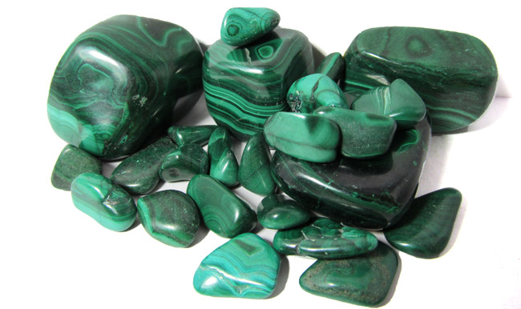
Ametiszt
Az Ametiszt ásvány az egyik legerősebb és leghatékonyabb ásványunk, a 12 mesterkristály egyike. A koronacsakra köve. Az ametiszt javítja az agy koncentráció képességét, tisztítja a vért, kiegyenlíti a vérnyomást, oldja a vérrögöket és jótékony hatással van az érrendszeri problémákra. Általános fájdalomcsillapító hatása van, ezért kiváló migrénes fejfájásra és csökkenti a pszichológiai fájdalmakat is. Hatékonyan oldja a stresszt, és kiegyensúlyozottá teszi viselőjét. Alkalmazhatjuk duzzanatok, illetve bőrbetegségek kezelésére,
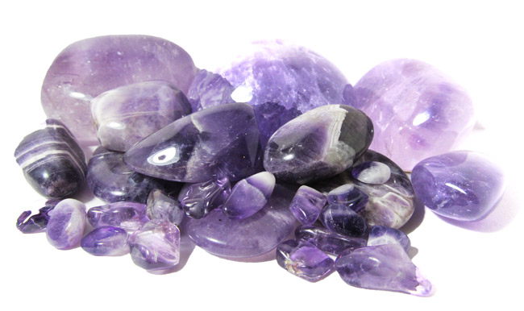
Jade
A Jade ásványt, már őseink is használták. Távol-Keleten szerencsehozó amulettként viselték, de már jól ismerték a vesére gyakorolt jótékony hatását is. A jade megnyugtatja a lelket, egyensúlyt teremt az energiaáramlásban, erősíti az idegrendszert, és elűzi a rossz közérzetet. Védelmet nyújt tulajdonosának az ártó szándékok, gondolatok ellen. Vonzza a szerencsét, a tisztaság és a nyugalom jelképe. Jótékony hatásai közé tartozik, hogy a párna alá helyezve, biztosítja a pihentető mély alvást. Fokozza a termékenységet, és terhesség közben, illetve utána is lehet viselni.
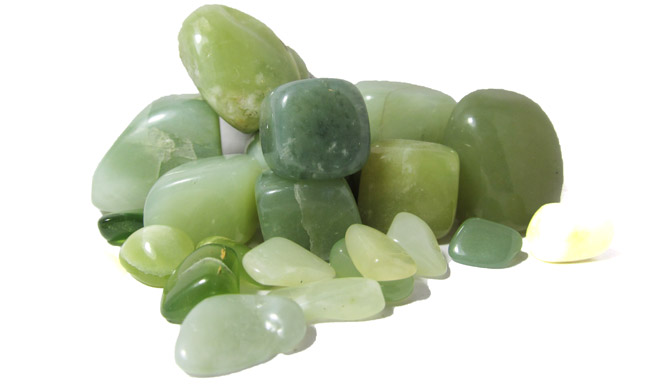
Holdkő
A Holdkő a nőiesség köve. Segít leküzdeni a hangulatingadozásokat és a depressziót. Oldja a szervezetben keletkező negatív energetikai blokkokat, csökkenti a stressz okozta gyomor problémákat. Medálként hordva, az arcunk tisztább és kisimultabb lesz. Sebgyógyító hatása van, terhesség alatt, és szülésnél is ajánlott a viselése. Jótékony hatásai közé tartozik, hogy fejleszti az érzelmi intelligenciát, serkenti a nyirokkeringést, megakadályozza a hormonháztartás felborulását, enyhíti a menstruációs panaszokat.
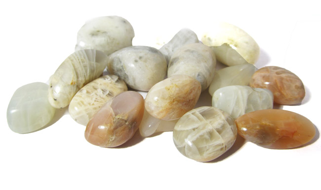
Fluorit
A Fluorit ásványt a 18. század óta ismerjük különálló ásványként. Nagyon hasznos védelmező kő. Feloldja a letapadt ízületeket, enyhíti az ízületi gyulladások okozta panaszokat. Tisztítja és stabilizálja az aurát, fejleszti az agyi funkciókat. Tanulás segítő ásvány, rendszerezi az eddig megtanultakat, és növeli a figyelem-összpontosítását. Csökkenti a stresszt, megnyugtat és hatásosan blokkolja a geopatikus stresszt, illetve az elektromágneses szmogot is, ezért ha sokat dolgozunk számítógép előtt, tegyünk egy fluoritot az asztalunkra.
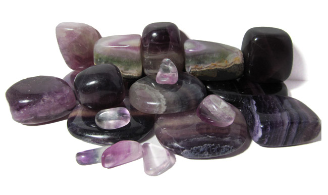
Akvamarin
Az Akvamarin rendkívül szép és nagyon erős gyógyhatású ásvány, a bátorság köve. Az akvamarinról ősi legendák szólnak, hogy hordozóját gazdaggá és boldoggá teszi. A hagyományok szerint segít megkülönböztetni az igazat a hazugságtól, a barátot, az ellenségtől. A torokcsakra köve, segíti a kommunikációnkat, önkifejezésünket. Az akvamarin enyhíti a szénanátha és az autoimmun-betegségek tüneteit és jótékonyan hat a szem problémákra. Enyhíti az érzelmi problémákat, a depressziót. Jótékony hatással van a pajzsmirigyre és szabályozza a hormonháztartást.
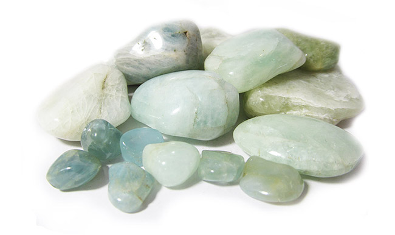
Jáspis
A Jáspis ásványt már évezredek óta ismerjük. Régen a harcosok markolatába foglaltak jáspis szemeket, hogy megvédje őket a sérüléstől. Sok fajtáját ismerjük és az általános hatások mellett, egy-egy jáspisnak külön meg van a jótékony hatása. Serkenti az ivarszerveket és az emésztő rendszer működését. A jáspis alapvetően tisztítja és átalakítja a fizikai testet, és védettséget biztosít viselőjének. Önzetlenségre és szerénységre nevel. Élénkíti a vérkeringést, erősíti az életösztönt és türelmet kölcsönöz tulajdonosának. Javítja a problémamegoldó képességünket, és stresszoldó hatása van.
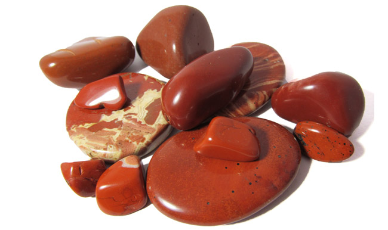
Apatit
Az apatit ásvány gyógyítja a csontokat, segíti a kalciumfelszívódást, s ezzel jótékonyan hat a porcokra, fogakra, csontokra. Javítja a csontsűrűséget, segíti az új sejtek fejlődését, sejtregenerációt, csonttöréseknél a gyorsabb gyógyulást. Javítja a kommunikációnkat, önkifejezésünket, nyugalmat biztosít viselőjének, enyhíti a szomorúságot és a haragot. Spirituális kő, segíti a meditációt, a médiumi képességeket, felébreszteni a kundaliní energiát, egyensúlyba hozni a fizikai, érzelmi és szellemi testet.
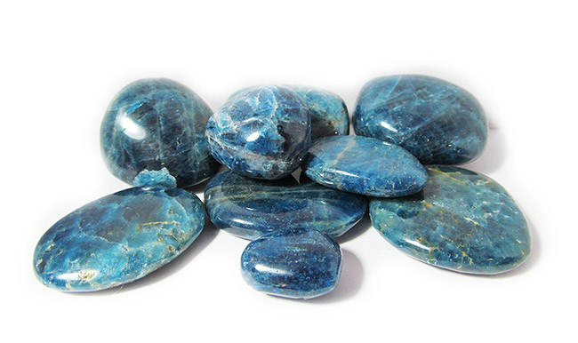
Aventurin
Az Aventurin ásványt a 17. század óta ismerjük. Gyógyító kőként használták, és a mai napig a szív gyógyszerként is nevezzük. Hihetetlen erős nyugtató ásvány, csökkenti a szívpanaszokat, az idegrendszeri problémákat, a kommunikációs problémákat, pl. a dadogást. Serkenti a zsíranyagcserét, csökkenti a koleszterinszintet és segít megelőzni a szívinfarktust. Erősíti a kötőszöveteket, nyugtatja a bőrt. Véd a geopatikus stressz ellen és az elektromágneses szmog okozta negatív hatásoktól.
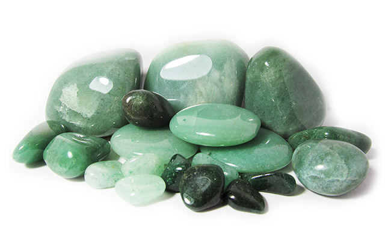
Gránát
A Gránát már a középkorban is ismert ásvány volt. A harcosok gránát darabokat rakattak a pajzsukba és a kardjuk markolatába, hogy megvédje őket a sérülésektől. A hagyomány szerint a gránát világosságot hoz a sötétségbe borult lélekbe. A gránát a segítség köve. Regenerálja a testet, tisztítja a vért, serkenti az anyagcserét, jótékony hatással van a szívre, tüdőre és a máj működésére. Erősíti az immunrendszert, fokozza a tápanyag felvételt a bélben. Csillapítja a depresszió tüneteit, a szorongást és a félelmet. Életenergiával tölti fel az egész szervezetet és segít az önfejlesztésben.
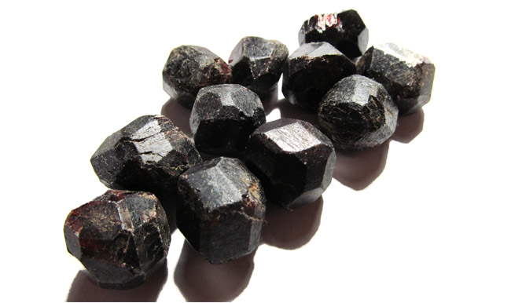
Achát
Az achát ásványt már az ókorban is nagy becsben tartották, mint szerencsehozó és védő követ. Erős földelő ásványfajta. Támogatja a fizikai, szellemi és érzelmi egészségünk megfelelő működését. Nyugtató kő, oldja a stresszt, gyógyítja az érzelmi sérülések okozta szívfájdalmakat, fejleszti a szellemi tevékenységet, az emlékezőképességet. Az achát fajták segítik az emésztést, de köztük is a legjobban a mohaachát és a tűzachát szabályozza az emésztés normális működését. Az achát elnyeli a negatív energiákat, segíti a spirituális fejlődésünket, fokozza a kötődést a kollektív tudathoz.
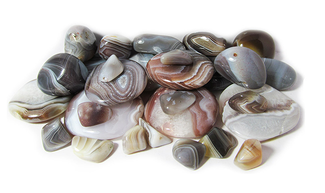
Borostyán
A Borostyán valójában fokozatosan elásványosodott gyanta. Az emberiség első drágaköve, jótékony hatása kb. 7000 éve ismert. A borostyánkő melegséget és bizalmat sugároz. A legjobb társunkká válhat, hisz segít érvényesülni az életben. Csillapítja a szervezetben keletkező gyulladásokat, megküzd bármilyen fertőzéssel, légúti megbetegedéssel. Javítja az anyagcserét, serkenti a gyomor, vese, lép, máj működését. Elnyeli a negatív energiákat a szervezetből, és átalakítja őket pozitívvá, ezáltal beindítja a szervezet öngyógyítását. Hatékonyan védi az egész szervezetet a negatív energiáktól és tisztítja az auránkat.
Ónix
Az Ónix ásványt a középkor óta ismerjük és valójában fekete kalcedonról (achát) van szó. Könnyen össze lehet téveszteni obszidiánnal vagy fekete turmalinnal, ezért körültekintően vásároljunk, mivel mind a három kőnek teljesen más gyógyhatásai vannak. Az ónix, leginkább az öntudatot, a józan gondolkodást és a logikát erősíti, nagy segítsége lehet a labilis emberek számára, mivel kiegyensúlyozza az energiaáramlást a szervezetben. Erős védelmező ásvány, távol tartja a negatív entitásokat. Fokozza az életerőt, a kitartást és támogatást nyújt stresszes helyzetekben.
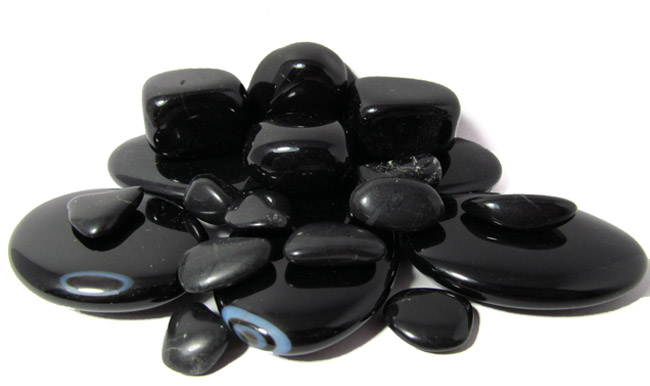
Hegyikristály
A Hegyikristály az egyik legerősebb és legfontosabb ásványunk. A 12 mesterkristály egyike. A hagyományok úgy tartják, hogy megvéd a démonoktól, betegségektől és energiát, erőt ad tulajdonosának. A hegyikristály hatása rendkívül sokoldalú, mestergyógyító. Javítja az emlékezőképességet, csökkenti a depresszió tüneteit, nyugtatja az idegeket, kiegyensúlyozottá teszi viselőjét. Erősíti az immunrendszert, egyensúlyba hozza a szervezetet. Általános fájdalomcsillapító, méregtelenítő hatású, serkenti az anyagcserét, szabályozza a hormonháztartást és a vércukorszintet.
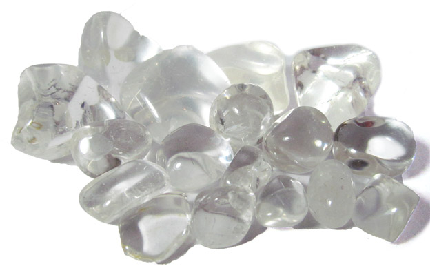
Tigrisszem
A Tigrisszem ugyancsak a 12 mesterkristály egyike. A természetben átalakulás során sólyomszemből jön létre, ezért gyógyhatása részben megegyezik a sólyomszem hatásaival. Gyógyítja a szem betegségeit, régen rontások ellen használták. Jótékonyan hat az idegrendszerre, az ideggyulladásokra, serkenti az agyi funkciókat, növeli a koncentrációs képességet és segít a nehéz döntések meghozatalában. Segítség lehet skizofrénia és epilepszia esetén is. Növeli a tetterőt, a bátorságot, optimistává teszi tulajdonosát, megszünteti az önértékelési zavarokat.
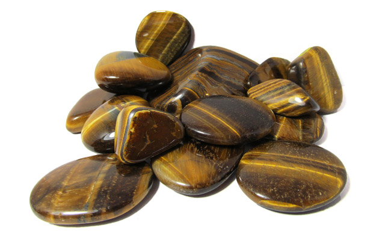